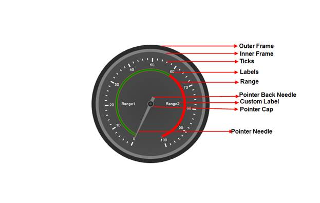

The circular gauge is one that is most commonly observed in the analog speedometer, process control, and clocks. It is a circular shaped gauge, which uses pointers, ticks and labels to show scaled values.
Where do I find the installed samples?
To view the installed samples:
1. Open the ASP.NET Sample browser from the Dashboard. (Refer to the Samples and Locations section).
2. Select ASP.NET Gauge under Other Products.
3. Go through the samples installed.
Refer to the Viewing samples section for more detail.
Elaborate Structure of a circular gauge
This section gives you an idea of the different sections of a
Gauge Control.
None of the elements of the gauge control are steadfast, i.e.
you can choose which of the elements you would want to display in your gauge.
Below is the image that illustrates various sections of the control, along
with their detailed descriptions.

Figure 38: Elaborate structure of a circular gauge
Elements and Features of the circular gauge
Scales
Scales are used to control the value ranges and also used as a basis for the placement of child elementssuch as the tick marks. The radius of the scale bar is controlled by the Radius property. By default, the values start from the minimum value and move clock-wise to the maximum value. It is possible to reverse this direction by setting the ScaleDirection property to Anticlockwise.
Pointer
Circular Pointers are scale indicator that points to a value along a scale. Circular Pointers are highly customizable. Circular Pointers can be added to the circular scale using different parameters to present the scales.
Range
Ranges are objects that highlight a range of values. Start Value and End value of the range can be specified using its StartValue and Endvalueproperties. The Width of the range can be customized using its StartWidth and EndWidth properties. We can set the location of the range based on the scale position using the DistanceFromScale property and the RangePosition property.
Major and Minor Ticks
· Major Ticks are the primary scale indicators.
· Minor Ticks are the secondary scale indicators.
The TickStyle property of the tick element specifies the number of the value intervals along the entire length of the scale bar.
Labels:
Labels in the
circular gauge use different parameters to present the scales with meaningful
values that are measured in universal units.
Essential Gauge comes with
numerous options to customize label display that can be added to the circular
scale.
You can set the location of the labels based on the scale position using the DistanceFromScale property and the TickPlacement property. Labels can be shown for Major or Minor ticks. This can be set using the TickStyle property.
Pointer Cap
The pointer cap anchors the pointer.
You can control the radius of the pointer cap in Essential Gauge for ASP.NET using the PointerCapRadius property.
Gauge Custom Label
Using the CustomLabel element of gauge, you can add custom
text labels to the Essential Gauge.
The label value can be set using
its LabelValue property, using which the location and angle
of the label can be customized.
You can also customize the custom text, using its FontSize and FontFamily properties.
 Creating circular gauge in your Web
application
Creating circular gauge in your Web
application